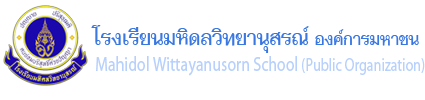

อาคารมหิดลวิทยานุสรณ์ 1
MAHIDOL WITTAYANUSORN 1
ที่ตั้งของห้องปฎิบัติการศิลปะ ที่พร้อมด้วยอุปกรณ์และวัสดุสร้างสรรค์งานศิลปะและงานฝีมือตามจินตนาการ เพื่อการคิดอย่างสร้างสรรค์ ห้องสาขาวิชาวิทยาการคอมพิวเตอร์ คณิตศาสตร์ สังคมศึกษาและศิลปะ ภาษาไทย และภาษาต่างประเทศ
Mahidol Wittayanusorn 1
Mahidol Wittayanusorn 1 located art studio, equipped with tools and equipment, as a place for student to express their own imagination and enhance creativity. Department of computer science, mathematics, social studies, arts, Thai, and foreign languages are also located here.
อาคารมหิดลวิทยานุสรณ์ 2
MAHIDOL WITTAYANUSORN 2
ที่ตั้งของห้องเรียนอัจฉริยะ (SMART CLASS ROOM) ที่พร้อมด้วยอุปกรณ์และเทคโนโลยีที่ทันสมัย ถ่ายทอดสดและบันทึกการเรียนด้วยระบบเสียงดิจิตอล สามารถเชื่อมต่อและเข้าชมการเรียนย้อนหลังได้ตลอดเวลา และห้องสาขาวิชาฟิสิกส์ ตลอดจนห้องวิจัยทางแสง(QUANTUM LAB) พร้อมอุปกรณ์เครื่องมือที่ได้มาตรฐานห้องวิจัยระดับประเทศ สำหรับทำงานวิจัยและโครงงานเกี่ยวแสง
Mahidol Wittayanusorn 2
Mahidol Wittayanusorn 2 location of smart classrooms, equipped with cutting-edge teaching media and live braodcasting and recording system, in which students can access through the courses at any time they want, and department of physics, light laboratory (quantum laboratory) for researches and projects related to light and optics.
อาคารมหิดลวิทยานุสรณ์ 3
MAHIDOL WITTAYANUSORN 3
ที่ตั้งของห้องสาขาวิชาชีววิทยา และเคมี ห้องเรียนและห้องปฏิบัติการเฉพาะสาขาวิชา ที่มีอุปกรณ์ทันสมัยได้มาตรฐานระดับนานาชาติ สำหรับการเรียนการสอน ค้นคว้า ทดลอง และฝึกปฏิบัติงานทางเทคนิคเฉพาะทาง ประกอบด้วย ห้องเพาะเลี้ยงเนื้อเยื่อ ห้องปฏิบัติการวิชาชีววิทยา ห้องปฏิบัติการเคมี และห้องเรียนดาราศาสตร์
Mahidol Wittayanusorn 3
Mahidol Wittayanusorn 3 Department of biology and chemistry locate here, alotogether with the departments' classroom and laboratory fully equipped with apparatus and equipment for education and specialized researches, including tissue culture laboratory, biology laboratory, chemistry laboratory, and astronomy laboratory.
โรงอาหาร CAFETERIA
ดูแลจัดการโภชนาการและอาหารที่ดีมีคุณภาพตามระบบ GMP ของ INTERTEK และได้มาตรฐานของสถาบันอาหาร กระทรวงอุตสาหกรรม
หอประชุมพระอุบาลีคุณูปมาจารย์ AUDITORIUM
รองรับผู้เข้าร่วมประชุมได้ประมาณ 1,000 คน
Cafeteria
provides healthy foods and maintains nutritions by implementing INTERTEK GMP standards, certified by National Food Institute, Ministry of Industry
Upali Kunupamacarya Auditorium with maximum capacity around 1,000 seats
ศูนย์กีฬา
SPORT CENTER
“สุขภาพที่ดี ร่างกายที่แข็งแรง นำไปสู่การเรียนรู้ที่ดี” พร้อมด้วยสถานที่ อุปกรณ์ และสิ่งอำนวยความสะดวกสำหรับออกกำลังกายหลากหลายประเภท อาทิ แบดมินตัน ปิงปองบาสเกตบอล ฯลฯ และอุปกรณ์ออกกำลังกายที่ได้มาตรฐาน ตลอดจนสระว่ายน้ำ และใช้เป็นห้องเรียนสาขาวิชาพลานามัย
Sport Center
“Healthy living means better study life” , equipped with instruments and spaces for various kinds of activities, such as courts for table tennis, badminton, basketball, swimming pools, exercise equipment. The place is also used for PE class.
หอพักนักเรียนหญิง
GIRL DORMITORY
อาคาร 5 ชั้น แต่ละชั้นมีห้องพักสำหรับอาจารย์และนักเรียน 40 ห้อง พร้อมด้วยสาธารณูปโภคและสิ่งแวดล้อมที่เอื้อต่อการพักผ่อน และเพียงพอต่อจำนวนผู้พักอาศัย และพร้อมด้วยห้องดูทีวี ห้องอ่านหนังสือ
Girl Dormitory
5-storey residence. Each floor has 40 units for students and teachers. The The residence is fully equipped with services and facilities, common room with TV, and study room, with warm and relaxed atmosphere.
หอพักนักเรียนชาย
BOY DORMITORY
อาคาร 9 ชั้น ชั้นที่ 3 ถึง 7 เป็นห้องพักนักเรียน มีห้องพักนักเรียน 120 ห้อง นักเรียนพักห้องละ 4 คน และพร้อมด้วยสาธารณูปโภคและสิ่งแวดล้อมที่เอื้อต่อการพักผ่อน และรองรับได้เพียงพอต่อจำนวนผู้พักอาศัย และพร้อมด้วยห้องดูทีวี ห้องอ่านหนังสือ
Boy Dormitory
9-storey, 120-unit on campus residence for students. Rooms are located on 3rd-7th floors. A room can allocate up to four students. The residence is fully equipped with services and facilities , common room with TV, and study room with warm and relaxed atmosphere.
อาคารรับรอง
GUEST HOUSE
อาคารที่พักสำหรับผู้มาเยือนหรือผู้เข้าร่วมกิจกรรมที่โรงเรียนจัดขึ้น พร้อมด้วยสาธารณูปโภคและสิ่งอำนวยความสะดวกต่างๆ
Guest House
Guest house an acommodation for visitors or participants in school's activities, co,plemented with utility services and facilities.
ห้องปฏิบัติการทางสรีรวิทยาของพืช
LABORATORY OF PLANT PHYSIOLOGY
พร้อมด้วยอุปกรณ์ เช่น เครื่อง GROWES CHAMBER, SPECTROPHOTOMETER, CENTRIFUTE เป็นต้น สำหรับทำงานวิจัยและโครงงานด้านสรีรวิทยาของพืช เช่น ข้าว และใช้เป็นห้องเรียนวิชาชีววิทยา
โรงฝึกงาน
WORK SHOP
เครื่องมือและอุปกรณ์งานช่างที่พร้อมกับการสร้างนวัตกรรมและเสริมสร้างประสบการณ์ปฏิบัติงาน ประกอบด้วย ห้องปฏิบัติการไฟฟ้าอิเล็กทรอนิกส์ & คอมพิวเตอร์ ห้องปฏิบัติการเขียนแบบ ห้องปฏิบัติการช่างกลโรงงาน และห้องปฏิบัติการเครื่องปั้นดินเผา และใช้เป็นห้องเรียนวิชาฟิสิกส์
Laboratory of plant physiology
equipped with growth chamber, spectrophotometer, centrifuge, etc., is used as a research laboratory in plant physiology, especially researches in rice, and as a biology classroom.
Workshop
equipped with mechanical tools and instruments, includes electric & electronic laboratory, computer laboratory, drafting room, industrial workshop, and pottery studio. The place is also used for courses in physics.
ศูนย์วิทยบริการ
ACADEMIC RESOURCE CENTER
แหล่งวิทยาการที่มีสื่อความรู้หลากหลายรูปแบบครบถ้วนทุกสาขาวิชา จัดบริการสนับสนุนและส่งเสริมการศึกษา เรียนรู้ การค้นคว้าวิจัย พร้อมระบบเครือข่ายอินเตอร์เน็ตความเร็วสูง เพื่อการเรียนรู้และเข้าถึงข้อมูลได้รวดเร็วฉับไว
ห้องฉายภาพเสมือนจริงดาราศาสตร์ 3 มิติ
MWITS-SWINBURNE Virtual Reality Theatre
ฉายภาพยนตร์ด้วยระบบดิจิตอลทั้งภาพและเสียง จัดตั้งขึ้นจากความร่วมมือกับ The Centre for Astrophysics & Supercomputing, Swinburne University of Technology, Australia เพื่อใช้เป็นสื่อการเรียนการสอนดาราศาสตร์ที่จะช่วยจุดประกาย เสริมสร้างจินตนาการให้เกิดความสนใจศึกษาและค้นคว้าทางด้านวิทยาศาสตร์และเทคโนโลยีมากขึ้น
Academic Resource Center
provides a variety of academic support services to the school with high-speed internet for educational and research purpose.
MWITS-Swinburne Virtual Reality Theatre
Established under the cooperation with the Center for Astrophysics and Supercomputing, Swinburne University of Technology, Australia, is functioned as teaching materials for courses in astronomy,stimulating imagination and inspiring a new generations of astronomers students.